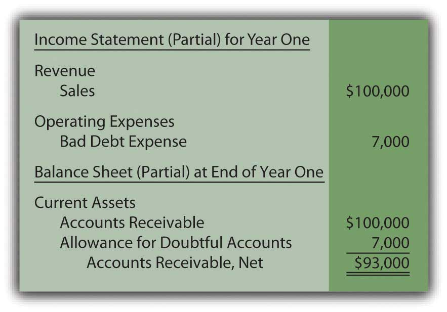
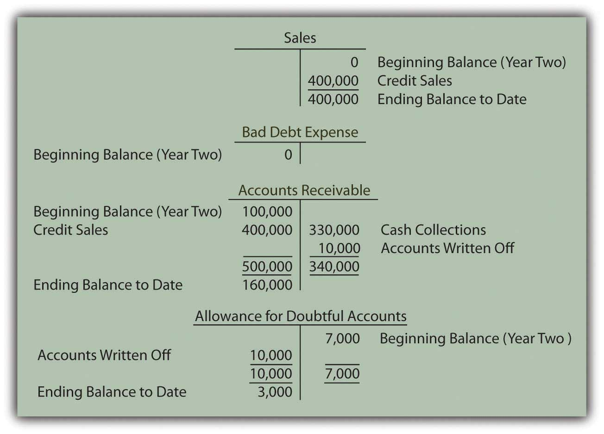
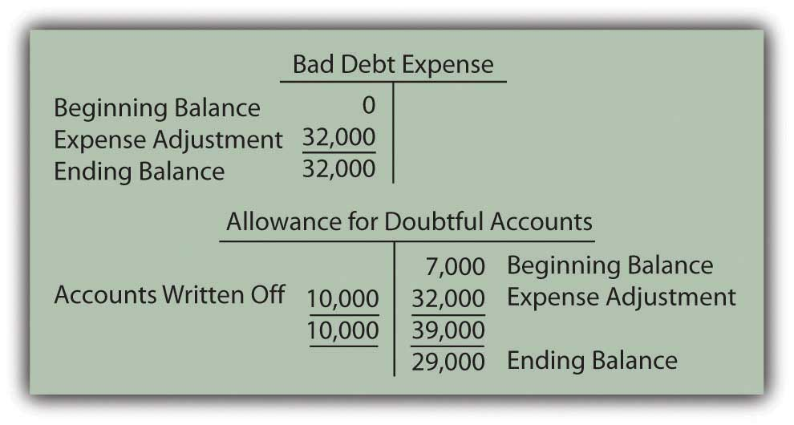
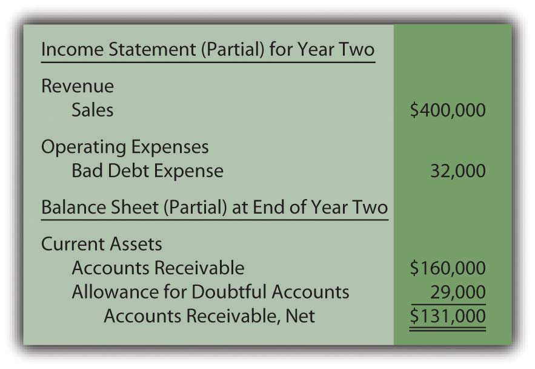
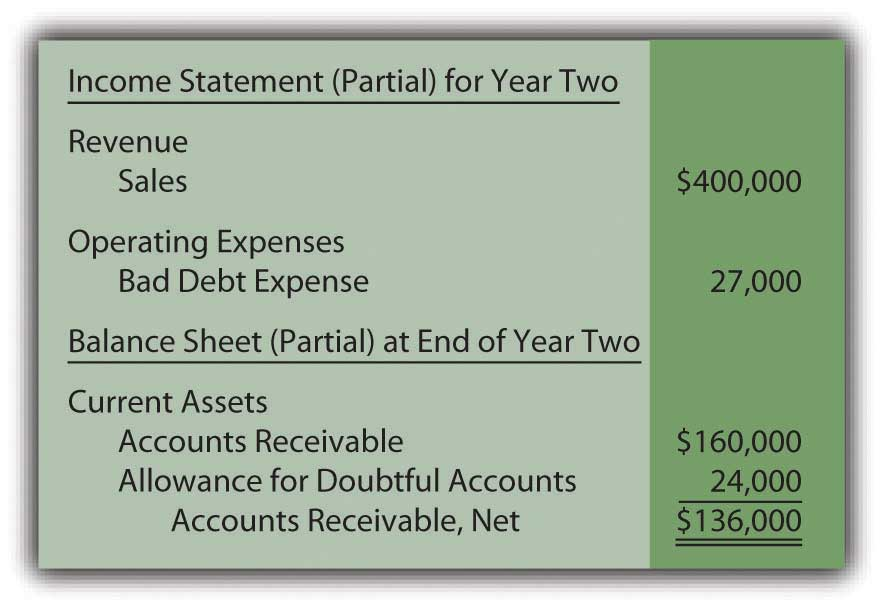
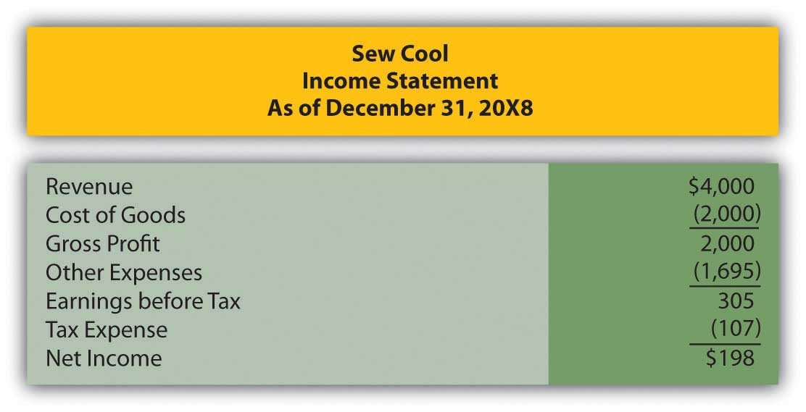
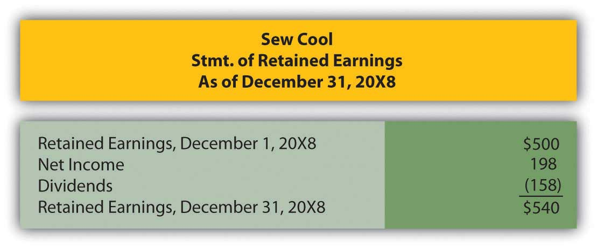
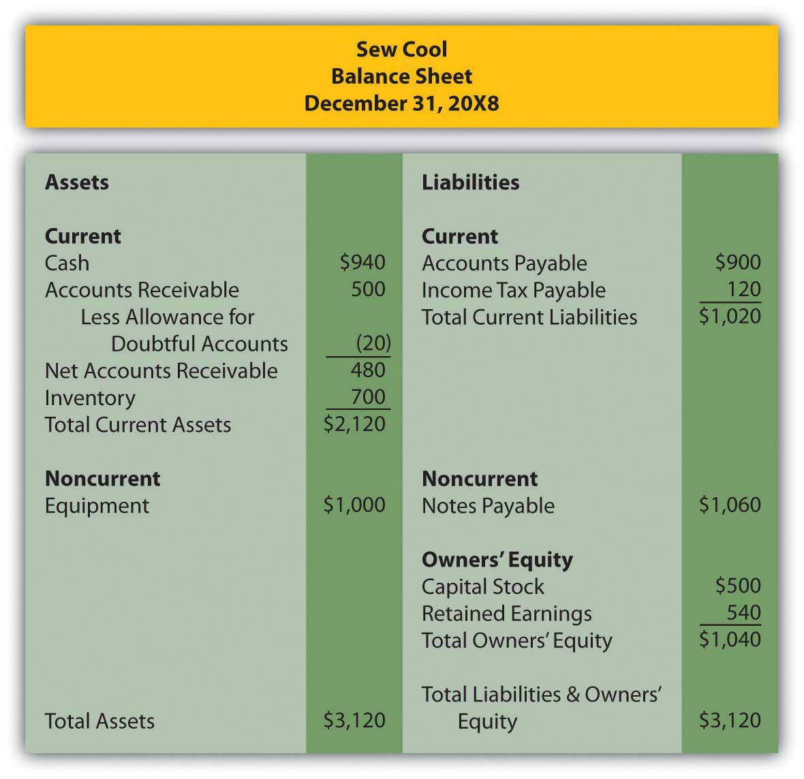
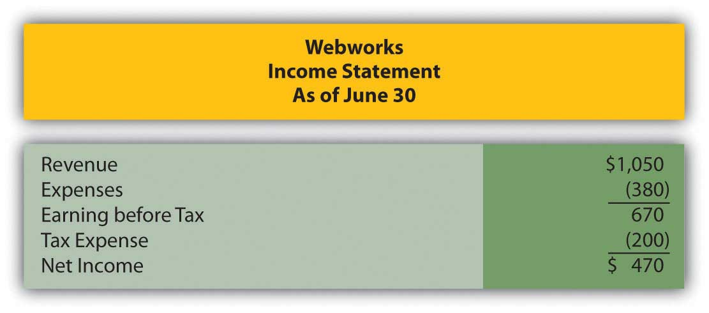

Joe introduces Chapter 7 "In a Set of Financial Statements, What Information Is Conveyed about Receivables?" and speaks about the course in general.
At the end of this section, students should be able to meet the following objectives:
Question: The goal of financial accounting is to paint a fairly presented portrait of an organization that enables decision makers to make a reasonable assessment of its financial health and future prospects. This likeness should be communicated based on United States generally accepted accounting principlesAs indicated previously, other versions of generally accepted accounting principles do exist. Unless otherwise noted, in this textbook, the presentation of U.S. GAAP is assumed.(U.S. GAAP) with no material misstatements included. The success of the conveyance is dependent on the ability of an organization’s accountants to prepare financial statements that meet this rigorous standard.
Equally as important, every party analyzing the resulting statements must possess the knowledge necessary to understand the multitude of reported figures and explanations. If appropriate decisions are to result based on this information, both the preparer and the reader need an in-depth knowledge of U.S. GAAP.
For example, the asset section of the balance sheet produced by Dell Inc. as of January 30, 2009, indicates that the company held “accounts receivable, net” amounting to $4.731 billion. What does this figure reflect according to U.S. GAAP? What information is communicated to decision makers about a company and its accounts receivable when a single number such as $4.731 billion is reported?
Answer: One of the most satisfying results of mastering the terminology, rules, and principles of financial accounting is the ability to understand the meaning of amounts and balances disclosed about an organization. In magazines, newspapers, radio, television, and the Internet, such information is presented and analyzed daily. As with any language, failure to comprehend elements of the discussion leaves the listener lost and feeling vulnerable. However, following a reasonable amount of study, the informational content begins to make sense and quickly becomes useful in arriving at logical financial decisions.
In previous chapters, the term “accounts receivableAn asset that reports amounts generated by credit sales that are still owed to an organization by its customers.” was introduced to report amounts owed to a company by its customers. Individual balances are generated by sales made on credit. According to U.S. GAAP, the figure that is presented on a balance sheet for accounts receivable is its net realizable valueThe amount of cash that is expected to be generated by an asset after costs necessary to obtain the cash are removed; as related to accounts receivable, the amount an organization estimates it will ultimately collect from its customers.—the amount of cash the company estimates will be collected over time from these accounts.
Consequently, officials for Dell Inc. analyzed the company’s accounts receivable as of January 30, 2009, and determined that $4.731 billion was the best guess as to the cash that would be collected. The actual total of receivables was higher than that figure but an estimated amount of doubtful accounts had been subtracted in recognition that a portion of these debts could never be collected. For this reason, the asset is identified on the balance sheet as “accounts receivable, net” or, sometimes, “accounts receivable, net of allowance for doubtful accounts” to explain that future losses have already been anticipated and removed.
Link to multiple-choice question for practice purposes: http://www.quia.com/quiz/2092914.html
Question: As discussed in previous chapters, many of the figures reported in financial accounting cannot be absolutely correct. Although $4.731 billion is the asset balance shown by Dell, the cash eventually collected might be somewhat higher or lower. Should the lack of exactness in reporting receivables cause concern for decision makers?
Answer: No one will ever be able to predict the exact amount of cash to be received from nearly $5 billion in accounts receivable. In fact, Note One to Dell’s financial statements specifically states, “The preparation of financial statements in accordance with GAAP requires the use of management’s estimates. These estimates are subjective in nature and involve judgments that affect the reported amounts of assets and liabilities, the disclosure of contingent assets and liabilities at fiscal year-end, and the reported amounts of revenues and expenses during the fiscal year. Actual results could differ from those estimates.”
Knowledgeable decision makers understand that some degree of uncertainty exists with all such balances. However, a very specific figure does appear on Dell’s balance sheet. By including this amount, company officials are asserting that they have obtained sufficient evidence to provide reasonable assurance that the amount collected will not be a materially different figure.The independent auditors also analyze the available evidence and must believe that it is sufficient to provide the same reasonable assurance in order to render an unqualified opinion on the financial statements.
This is the meaning of an accounts receivable balance presented according to U.S. GAAP. Actual receipts are expected to be close enough to $4.731 billion so that an interested party can rely on this number in arriving at considered decisions about the reporting company’s financial health and future prospects. Officials believe they have evidence that any eventual difference with the cash collected will be so small that the same decisions would have been made even if the exact outcome had been known at the time of reporting. The difference between reported and actual figures is most likely to be inconsequential. Once again, though, absolute assurance is not given for such reported balances but merely reasonable assurance.
Clearly, the reporting of receivables moves the coverage of financial accounting into more complicated territory. In the transactions and events analyzed previously, uncertainty was rarely mentioned. The financial impact of signing a bank loan or the payment of a salary can be described to the penny except in unusual situations. Here, the normal reporting of accounts receivable introduces the problem of preparing statements where the ultimate outcome is literally unknown. The very nature of such uncertainty forces the accounting process to address such challenges in some logical fashion.
Questions: Inherent uncertainty is associated with the reporting of receivables. No one can know exactly how much cash will be collected. How do company officials obtain sufficient evidence to provide reasonable assurance that the balance is not materially misstated? How does any business ever anticipate the amount of cash that will be collected from what can be a massive number of accounts receivable?
Answer: In accounting, reported balances never represent random guesses. Considerable investigation and analysis goes into arriving at financial statement figures. To determine the net realizable value appropriate for accounts receivable, company officials consider many relevant factors such as the following:
Dell Inc. explains this process within the notes to its financial statements by indicating that its estimation “is based on an analysis of historical bad debt experience, current receivables aging, expected future write-offs, as well as an assessment of specific identifiable customer accounts considered at risk or uncollectible.”
Additional information disclosed by Dell indicates that the company actually held $4.843 billion in accounts receivable but—at the date of the balance sheet—$112 million of these accounts were anticipated to be uncollectible. Thus, the amount of cash that is estimated to be received is the reported $4.731 billion balance ($4.843 billion total less $112 million expected to be uncollectible). Quite obviously, decision makers studying the company will be interested in comparing these data to the figures disclosed by Dell in previous years as well as the information disseminated by competing organizations such as Hewlett-Packard and Apple. Just determining whether the $112 million in uncollectible accounts is a relatively high or low figure is quite significant in evaluating the efficiency of Dell’s current operations.
Link to multiple-choice question for practice purposes: http://www.quia.com/quiz/2092898.html
Because of various uncertainties, many of the figures reported in a set of financial statements represent estimations. Accounts receivable is shown at its net realizable value, the amount of cash expected to be collected. Losses from bad accounts are anticipated and removed based on historical trends and other relevant information. Thus, the figure reported in the asset section of the balance sheet is lower than the total amount of receivables held by the company.
At the end of this section, students should be able to meet the following objectives:
Question: Based on the information provided by Dell Inc., companies seem to maintain two separate ledger accounts in order to report accounts receivables on their balance sheet at net realizable value. One is the sum of all accounts outstanding and the other is an estimation of the amount within that total which will never be collected. Interestingly, the first is a fact and the second is an opinion. The two are then combined to arrive at the net realizable value figure that is shown within the financial statements. Is the amount reported for accounts receivable actually the net of the total due from customers less the anticipated amount of doubtful accounts?
Answer: Yes, companies maintain two separate T-accounts for accounts receivables but that is solely because of the uncertainty involved. If the balance to be collected was known, one account would suffice for reporting purposes. However, that level of certainty is rarely possible.
Whenever a balance sheet is to be produced, these two accounts are netted to arrive at net realizable value, the figure to be reported for this asset.
The allowance for doubtful accounts is an example of a “contra accountOffset to an account that reduces the total balance to a net amount; in this chapter, the allowance for doubtful accounts always reduces accounts receivable to the amount expected to be collected.,” one that always appears with another account but as a direct reduction to lower the reported value. Here, the allowance serves to decrease the receivable balance to its estimated net realizable value. As a contra asset account, debit and credit rules are applied that are the opposite of the normal asset rules. Thus, the allowance increases with a credit (creating a decrease in the net receivable balance) and decreases with a debit. The more accounts receivable a company expects to be bad, the larger the allowance. This increase, in turn, reduces the net realizable value shown on the balance sheet.
By establishing two T-accounts, a company such as Dell can manage a total of $4.843 billion in accounts receivables while setting up a separate allowance balance of $112 million. As a result, the reported figure—as required by U.S. GAAP—is the estimated net realizable value of $4.731 billion.
Question: Accounts receivable and the offsetting allowance for doubtful accounts are netted with the resulting figure reported on the balance sheet.Some companies include both accounts on the balance sheet to explain the origin of the reported balance. Others show only the single net figure with additional information provided in the notes to the financial statements.How does the existence of doubtful accounts affect the income statement? Sales are made but a portion of the resulting receivables must be reduced because collection is rarely expected to be 100 percent. Does an increase in this allowance create an expense for the reporting company?
Answer: Previously, an expense was defined as a measure of the outflow or reduction of net assets caused by the reporting company’s attempt to generate revenues. If receivables are recorded that will eventually have to be removed because they cannot be collected, an expense occurs. In financial reporting, terms such as “bad debt expenseEstimated expense from making credit sales to customers who will never pay; because of the matching principle, recorded in the same period as the sales revenue.,” “doubtful accounts expense,” or “the provision for uncollectible accounts” are often encountered.
The inherent uncertainty as to the amount of cash that will actually be received affects the physical recording process. To illustrate, assume that a company makes sales on account to one hundred different customers late in Year One for $1,000 each. The earning process is substantially complete at the time of sale and the amount of cash to be received can be reasonably estimated. According to the revenue realization principle found within accrual accounting, the company should immediately recognize the $100,000 revenue generated by these transactions.Because the focus of the discussion here is on accounts receivable and their collectability, the recognition of cost of goods sold as well as the possible return of any merchandise will be omitted. Those topics are discussed in detail in later chapters.
Figure 7.1 Journal Entry—Year One—Sales Made on Credit
Assume further that the company’s past history and other relevant information indicate to officials that approximately 7 percent of all credit sales will prove to be uncollectible. An expense of $7,000 (7 percent of $100,000) is anticipated because only $93,000 in cash is expected from these receivables rather than the full $100,000.
The specific identity and the actual amount of these bad accounts will probably not be known for several months. No physical evidence exists at the time of sale to indicate which will become worthless (buyers rarely make a purchase and then immediately declare bankruptcy or leave town). For convenience, accountants wait until financial statements are to be produced before making their estimation of net realizable value. The necessary reduction is then recorded by means of an adjusting entry.
Question: This company holds $100,000 in accounts receivable but only expects to collect $93,000 based on the available evidence. The $7,000 reduction in the asset is an expense. When should the expense be recognized? These sales were made in Year One but the identity of the specific customers who fail to pay and the exact amounts to be removed will not be determined until Year Two. Should bad debt expense be recognized in the same year as the sales by relying on an estimate or delayed until the actual results are eventually finalized?
Answer: This situation illustrates how accrual accounting plays such a key role within U.S. GAAP. As discussed previously, the timing of expense recognition according to accrual accounting is based on the matching principle. Where possible, expenses are recorded in the same period as the revenues they helped generate. That guidance is clear. Thus, every company should handle uncollectible accounts in the same manner. The expected expense is the result of making sales to customers who ultimately will never pay. Because the revenue was reported at the time of sale in Year One, the related expense must also be recognized in that year. This handling is appropriate according to accrual accounting even though the $7,000 is only an estimated figure.
Based on U.S. GAAP, when the company produces financial statements at the end of Year One, an adjusting entry is made to (1) reduce the receivables balance to its net realizable value and (2) recognize an expense in the same period as the related revenue.
Figure 7.2 Adjusting Entry—End of Year One—Recognition of Bad Debt Expense for the Period

After this entry is made and posted to the ledger, the Year One financial statements contain the following information based on the adjusted T-account balances (assuming for convenience that no other sales were made on credit during the year):
Figure 7.3 Year One—Financial Statements
From this information, anyone studying these financial statements for Year One should understand that an expense estimated at $7,000 was incurred this year because the company made sales that will never be collected. In addition, year-end accounts receivable total $100,000 but have an anticipated net realizable value of only $93,000. Neither the $7,000 nor the $93,000 figure is expected to be exact but the eventual amounts should not be materially different. This basic portrait provides decision makers with fairly presented information about the accounts receivables held by the reporting company.
Link to multiple-choice question for practice purposes: http://www.quia.com/quiz/2092899.html
Question: When financial statements are prepared, an expense must be recognized and the receivable balance reduced to net realizable value. However, in the above adjusting entry, why was the accounts receivable account not directly decreased by $7,000 to the anticipated balance of $93,000? This approach is simpler as well as easier to understand. Why was the $7,000 added to an allowance account? In reporting receivables, why go to the trouble of setting up a separate allowance?
Answer: When the company prepares this adjustment at the end of Year One, it does not yet know which accounts will fail to be collected. Officials are only guessing that $7,000 will prove worthless. Plus, on the date of the balance sheet, the company actually does hold $100,000 in accounts receivable. That figure cannot be reduced directly until the specific identity of the accounts to be written off has been determined. Utilizing a separate allowance allows the company to communicate the expected amount of cash while still maintaining a record of all balances in the accounts receivable T-account.
Sales and the ultimate decision that specific accounts receivable will never be collected can happen months apart. During the interim, bad debts are estimated and recorded on the income statement as an expense and on the balance sheet through an allowance account, a contra asset. In that way, the receivable balance is shown at net realizable value while expenses are recognized in the same period as the sale to correspond with the matching principle. When financial statements are prepared, an estimation of the uncollectible amounts is made and an adjusting entry recorded. Thus, the expense, the allowance account, and the accounts receivable are all presented properly according to U.S. GAAP.
At the end of this section, students should be able to meet the following objectives:
Question: The company in this illustration expects to collect an amount from its receivables that will not materially differ from $93,000. The related $7,000 expense is recorded in the same period as the revenue through an adjusting entry. What happens when an actual account is determined to be uncollectible? For example, assume that on March 13, Year Two, a $1,000 balance proves to be worthless. The customer dies, declares bankruptcy, disappears, or just refuses to make payment. This is not a new expense; $7,000 was already anticipated and recognized in Year One. It is merely the first discovery. How does the subsequent write-off of a receivable as being uncollectible affect the various T-account balances?
Answer: When an account proves to be uncollectible, the receivable T-account is decreased. The $1,000 balance is simply removed. It is no longer viewed as an asset because it does not have future economic benefit. Furthermore, the anticipated amount of bad accounts is no longer $7,000. Because this first worthless receivable has been identified and eliminated, only $6,000 remains in the allowance.
The following journal entry is made to write off this account. This entry is repeated whenever a balance is found to be worthless. No additional expense is recognized. The expense was estimated and recorded in the previous period based on applying accrual accounting and the matching principle.
Figure 7.4 Journal Entry during Year Two—Write-Off of Specific Account as Uncollectible

The two basic steps in the recording of doubtful accounts are:
Link to multiple-choice question for practice purposes: http://www.quia.com/quiz/2092916.html
Question: After an account receivable has been written off as uncollectible, does the company cease in its attempts to collect the amount due from that customer?
Answer: Organizations always make every possible effort to recover any money that they are owed. Writing off an account simply means that the chances of collection are judged to be slim. However, efforts to force payment will continue, often with increasingly aggressive techniques. If money is ever received from a written off account, the company first reinstates the account by reversing the earlier entry. Then, the cash received is recorded in the normal fashion. To illustrate, assume that the above account is eventually collected from this customer.
Figure 7.5 Journal Entry—Reinstate Account Previously Thought to Be Worthless

Figure 7.6 Journal Entry—Collection of Reinstated AccountMany companies combine these two entries for convenience. The debit to accounts receivable in the first entry exactly offsets the credit in the second. Thus, the same recording impact is achieved by simply debiting cash and crediting the allowance for doubtful accounts. However, the rationale for that single entry is not always as evident to a beginning student.
Question: In this illustration, at the end of Year One, the company estimated that $7,000 of its accounts receivable will ultimately prove to be uncollectible. However, in Year Two, that figure is likely to be proven wrong. The actual amount might well be $6,000 or $8,000 or many other numbers. When the precise figure is known, does a company return to its Year One financial statements and adjust them to this correct balance? Should a company continue reporting an estimated figure once it has been shown to be incorrect?
Answer: According to U.S. GAAP, if a number is reported based on a reasonable estimation, any subsequent differences with actual amounts are not handled retroactively (by changing the previously released figures). For example, if uncollectible accounts here prove to be $8,000, the company does not adjust the balance reported as the Year One bad debt expense from $7,000 to $8,000. It continues to report $7,000 for that period even though that number is now known to be wrong.As will be discussed in subsequent chapters, previously issued financial statements are restated if found to contain material misstatements or in a few other specific circumstances. However, a difference between an actual figure and a reasonable estimation is not handled in this manner. In real life, determining whether a previously reported amount was a reasonable estimation can be the subject of intense debate.
There are several practical reasons for the accountant’s unwillingness to adjust previously reported estimations unless they were clearly unreasonable or fraudulent:
Thus, no change is made in financial figures that have already been released whenever a reasonable estimation proves to be wrong. However, differences that arise should be taken into consideration in creating current and subsequent statements. For example, if the Year One bad debts were expected to be 7 percent, but 8 percent actually proved to be uncollectible, the accountant might well choose to use a higher percentage at the end of Year Two to reflect this new knowledge.
Question: To carry this illustration one step further, assume that $400,000 in new credit sales are made during Year Two while cash of $330,000 is collected. Uncollectible receivables totaling $10,000 are written off in that year. What balances appear in the various T-accounts at the end of the subsequent year to reflect sales, collections, and the write-offs of receivables?
Answer: Sales and bad debt expense were reported previously for Year One. However, as income statement accounts, both were closed out so as to begin Year Two with zero balances. They are temporary accounts. In contrast, accounts receivable and the allowance for doubtful accounts appear on the balance sheet and retain their ending figures going into each subsequent period. They are permanent accounts. These two T-accounts will still show $100,000 and $7,000 respectively at the beginning of Year Two.
Assuming that no adjustments have yet been made, these four accounts hold the following balances at the end of Year Two based on appropriate journal entries. Notice that the expense account remains at zero until the end-of-year estimation is made and recorded.
Figure 7.7 End of Year Two—Sales, Receivables, and Bad Debt Balances

Question: In the above T-accounts, the balances represent the account totals for Year Two prior to year-end adjusting entries. Why does a debit balance of $3,000 appear in the allowance for doubtful accounts prior to the recording of the necessary adjustment? When a debit balance is found in the allowance for doubtful accounts, what does this figure signify?
Answer: When the Year One financial statements were produced, $7,000 was estimated as the amount of the receivables that would eventually be identified as uncollectible. In Year Two, the actual total written off turned out to be $10,000. The original figure was too low by $3,000. The difference is now reflected by the debit remaining in the allowance account. Until the estimation for the new year is determined and recorded, the balance residing in the allowance account indicates a previous underestimation (an ending debit balance) or overestimation (a credit) of the amount of worthless accounts.The $3,000 debit figure is assumed here for convenience to be solely the result of underestimating uncollectible accounts in Year One. Several other factors may also be present. For example, the balance in the allowance for doubtful accounts will be impacted by credit sales made in the current year that are discovered to be worthless before the end of the period. Such accounts reduce the allowance T-account prior to the recognition of an expense. The residual allowance balance is also affected by the collection of accounts that were written off as worthless in an earlier year. As described earlier, the allowance is actually increased by that event. However, the financial reporting is not altered by the actual cause of the final allowance figure.
Bad debt expense is estimated and recorded in the period of sale to correspond with the matching principle. Subsequent write-offs of specific accounts do not affect the expense further. Rather, both the asset and the allowance for doubtful accounts are decreased at that time. If a written off account is subsequently collected, the allowance account is increased to reverse the previous impact. Estimation errors are to be anticipated; perfect predictions are rarely possible. When the amount of uncollectible accounts differs from the original figure recognized, no retroactive adjustment is made if a reasonable estimation was made. Decisions have already been made by investors and creditors based on the original data and cannot be reversed. These readers of the statements should have understood that the information could not possibly reflect exact amounts.
At the end of this section, students should be able to meet the following objectives:
Question: The final step in reporting receivables at the end of Year Two is the estimation of the bad accounts incurred during this second year and the preparation of the related adjusting entry. According to the ledger balances, sales on credit for the year were $400,000, remaining accounts receivable amount to $160,000, and a $3,000 debit sits in the allowance for doubtful accounts. No entry has yet been made for the Year Two bad debt expense. How is the estimation of uncollectible accounts derived each year?
Answer: Much of financial accounting is quite standardized. However, estimations can be made by any method that is considered logical. After all, it is an estimate. Over the decades, two different approaches have come to predominate when predicting the amount of uncollectible accounts. As long as company officials obtain sufficient evidence to support the reported numbers, either way can be applied.
Percentage of sales methodThe income statement approach for estimating uncollectible accounts that computes bad debt expense by multiplying credit sales by the percentage that are not expected to be collected.. This alternative computes doubtful accounts expense by anticipating the percentage of sales (or credit sales) that will eventually fail to be collected. The percentage of sales method is sometimes referred to as an income statement approach because the only number being estimated (bad debt expense) appears on the income statement.
Percentage of receivables methodThe balance sheet approach for estimating uncollectible accounts that computes the allowance for doubtful accounts by multiplying accounts receivable by the percentage that are not expected to be collected.. Here, the proper balance for the allowance for doubtful accounts is determined based on the percentage of ending accounts receivable that are presumed to be uncollectible. This method is labeled a balance sheet approach because the one figure being estimated (the allowance for doubtful accounts) is found on the balance sheet. A common variation used by many companies is the “aging methodVariation of percentage of receivables method where all receivables are categorized by age; the total of each category is multiplied by an appropriate percentage and then summed to determine the allowance balance.,” which first categorizes all receivable balances by age and then multiplies each of the individual totals by a different percentage. Normally, a higher rate is used for accounts that are older because they are considered more likely to become uncollectible.
Question: Assume that this company chooses to use the percentage of sales method. All available evidence is studied by officials who come to believe that 8 percent of credit sales made during Year Two will prove to be worthless. In applying the percentage of sales method, what adjusting entry is made at the end of the year so that financial statements can be prepared?
Answer: According to the general ledger, the company generated $400,000 in credit sales during Year Two. If uncollectible accounts are expected to be 8 percent of that amount, the expense is reported as $32,000 ($400,000 × 8 percent). Bad debt expense (the figure estimated) must be raised from its present zero balance to $32,000.
Figure 7.8 Adjusting Entry for Year Two—Bad Accounts Estimated as a Percentage of Sales

This adjustment increases the expense to the appropriate $32,000 figure, the proper percentage of the sales figure. However, the allowance account already held a $3,000 debit balance ($7,000 Year One estimation less $10,000 accounts written off). As can be seen in the T-accounts, the $32,000 recorded expense results in only a $29,000 balance for the allowance for doubtful accounts.
Figure 7.9 Resulting T-Accounts, Based on Percentage of Sales Method
After this adjustment, the figures appearing in the financial statements for Year Two are as follows:
Figure 7.10 Bad Accounts Estimated Based on 8 Percent of Sales
Link to multiple-choice question for practice purposes: http://www.quia.com/quiz/2092879.html
Question: How can bad debt expense be reported as $32,000 while the allowance for doubtful accounts shows a balance of only $29,000? Should those two numbers not always be identical in every set of financial statements?
Answer: In this introductory coverage, the difference in these accounts is assumed to be caused solely by the failure of previous estimations to be accurate.See immediately preceding endnote for other reasons as to why these balances can differ. Last year, the doubtful accounts expense for this company was reported as $7,000 but accounts with balances totaling $10,000 proved to be uncollectible. Because companies do not go back to the statements of previous years to fix numbers when a reasonable estimate was made, the expense is $3,000 higher in the current period to compensate.
Mechanically, the underestimation still exists in the accounting records in Year Two. It creates the $3,000 debit in the allowance for doubtful accounts before the expense adjustment. Thus, although the current expense is $32,000 (8 percent of sales), the allowance is reported as only $29,000 (the $32,000 expense offset by the $3,000 debit balance remaining from the prior year).
Students are often concerned because these two reported numbers differ. However, both are merely estimates. The actual amount of worthless accounts is likely to be a number somewhat different from either $29,000 or $32,000. Therefore, the disagreement caused by the lingering impact of the $3,000 Year One underestimation should not be an issue as long as company officials believe that neither of the reported balances is materially misstated.
Question: The percentage of receivables method handles this process a bit differently. Assume that the Year Two adjusting entry has not yet been made so that bad debt expense remains at zero and the allowance for doubtful accounts still holds a $3,000 debit balance. However, the company has chosen to use the percentage of receivables method rather than the percentage of sales method. Officials have looked at all available evidence and come to the conclusion that 15 percent of ending accounts receivable ($160,000 × 15 percent or $24,000) is most likely to prove to be uncollectible. How does application of the percentage of receivables method affect the recording of doubtful accounts?
Answer: The percentage of receivables method (or the aging method if that variation is used) views the estimated figure of $24,000 as the proper total for the allowance for doubtful accounts. Thus, the accountant must turn the $3,000 debit balance residing in that contra asset account into the proper $24,000 credit. That change can only be accomplished by recognizing an expense of $27,000. Under the percentage of receivables method, after the adjustment has been recorded, the allowance balance will equal the estimate ($24,000). The expense is the amount needed to arrive at this allowance figure.
Figure 7.11 Adjusting Entry for Year Two—Bad Accounts Estimated as a Percentage of Receivables
As shown in the T-accounts below, this entry successfully changes the allowance from a $3,000 debit balance to the desired $24,000 credit. Because bad debt expense had a zero balance prior to this entry, it is now based solely on the $27,000 amount needed to establish the proper allowance.
Figure 7.12 Resulting T-Accounts, Based on Percentage of Receivables Method

After this adjusting entry, the figures appearing in the financial statements for Year Two are as follows:
Figure 7.13 Bad Accounts Estimated Based on 15 Percent of Receivables
Once again, the difference between the expense ($27,000) and the allowance ($24,000) is $3,000 as a result of the estimation being too low in the prior year. The current year expense must be higher.
Either approach can be used as long as adequate support is generated for the numbers reported. They are just two ways to estimate the effect of bad debts. However, financial accounting does stress the importance of consistency to help make the numbers comparable from year to year. Once a method is selected, it normally must continue to be used in all subsequent periods.
Under the percentage of sales method, the expense account is aligned with the volume of sales. In applying the percentage of receivables method, determining the uncollectible portion of ending receivables is the central focus. Regardless of the approach, both bad debt expense and the allowance for doubtful accounts are simply the result of estimating the final outcome of an uncertain event—the collection of accounts receivable.
Link to multiple-choice question for practice purposes: http://www.quia.com/quiz/2092880.html
Question: A company such as Dell Inc. must have thousands or even hundreds of thousands of separate receivables. The accounts receivable T-account maintains the total dollar amount owed to the company but does not indicate the balance due from each individual customer. How does an accounting system monitor all the specific receivable amounts? That has to be essential information for any organization for billing and collection purposes.
Answer: As indicated, a general ledger account only reflects the total at the present time. In many cases, as with accounts receivable, the composition of that balance is also important information. For those T-accounts, the accounting system can be expanded to include a subsidiary ledgerGroup of individual accounts whose sum totals (and, therefore, explains) a general ledger account balance. to maintain data about the various individual components making up the account total.
In the previous illustration, the company reports $160,000 as the total of its accounts receivable at the end of Year Two. A separate subsidiary ledger should be in place to monitor the amounts owed by each customer (Mr. A, Ms. B, and so on). The general ledger figure is used whenever financial statements are to be produced. The subsidiary ledger allows the company to access individual account balances so that appropriate action can be taken if specific receivables grow too large or become overdue.
When a subsidiary ledger is maintained, the accounting system can be programmed so that each entry into the designated general ledger T-account requires an immediate parallel increase or decrease to the appropriate individual account. Thus, a $75 sale on credit to Mr. A raises the overall accounts receivable total in the general ledger by that amount while also increasing the balance listed for Mr. A in the subsidiary ledger.
Subsidiary ledgers can be utilized in connection with any general ledger account where the availability of component information is helpful. Other than accounts receivable, they are commonly set up for inventory, equipment, and accounts payable. As might be imagined, big companies maintain subsidiary ledgers for virtually every T-account, whereas small companies are likely to limit use to accounts receivable and—possibly—a few other large balances.
Before computer systems became common, keeping the total of thousands of individual accounts in a subsidiary ledger in agreement with the corresponding general ledger T-account balance was an arduous task. Mechanical errors (mathematical problems as well as debit and credit mistakes) tended to abound. However, current electronic systems are typically designed so that the totals reconcile automatically.
Each year, an estimation of uncollectible accounts must be made as a preliminary step in the preparation of financial statements. Some companies use the percentage of sales method, which calculates the expense to be recognized, an amount which is then added to the allowance for doubtful accounts. Other companies use the percentage of receivable method (or a variation known as the aging method). It determines the ending balance for the allowance. The reported expense is the amount needed to adjust the allowance to this ending total. Both methods provide no more than an approximation of net realizable value based on the validity of the percentages that are applied.
At the end of this section, students should be able to meet the following objectives:
Question: In today’s global economy, many U.S. companies make a sizable amount of their sales internationally. The Coca-Cola Company, for example, generated approximately 74 percent of its revenues in 2008 outside North America. In such cases, U.S. dollars might still be the currency received. However, occasionally and sometimes often, U.S. companies make sales that will be settled in a foreign currency such as the Mexican peso or the Japanese yen. What reporting problems are created when a credit sale is denominated in a foreign currency?
Answer: This situation is a perfect example of why having an authoritative standard for financial accounting, such as U.S. GAAP, is so important for communication purposes. Foreign currency balances are extremely common in today’s world. For many companies, sales, purchases, expenses and the like can be denominated in dozens of different currencies. Mechanically, many methods of reporting such figures are available. Without standardization, decision makers would likely be faced with analyzing similar companies possibly reporting foreign balances in a variety of ways. Assessing the comparative financial health and future prospects of organizations using different types of accounting will always pose an extremely difficult challenge.
The basic problem with reporting foreign currency balances is that exchange rates are constantly in flux. The price of one euro in terms of U.S. dollars changes many times each day. If these rates remained constant, a single conversion value could be determined at the time of the initial transaction and then used consistently for reporting purposes. However, exchange rates are rarely fixed; they often change moment by moment. For example, if a sale is made on account with the money to be received in a foreign currency in sixty days, the relative worth of that balance will probably move up and down many times before collection. When such values float, the reporting of foreign currency amounts poses a challenge for financial accounting with no easy resolution.
Question: Exchange rates that vary over time create a reporting problem for companies working in international markets. To illustrate, assume a U.S. company makes a sale of a service to a Mexican company on December 9, Year One, for 100,000 Mexican pesos that will be paid at a later date. The exchange rate when the sale was made is assumed to be 1 peso equal to $0.08. However, by the end of Year One when financial statements are produced, the exchange rate has changed to 1 peso being equal to $0.09. What reporting does a U.S. company make of transactions that are denominated in a foreign currency if the exchange rate changes as time passes?As has been stated previously, this is an introductory textbook. Thus, a more in-depth examination of many important topics, such as foreign currency balances, can be found in upper-level accounting texts. The coverage here of foreign currency balances is only designed to introduce students to basic reporting problems and their resolutions.
Answer: At the time of the sale, reporting is easy. The 100,000 pesos has the equivalent value of $8,000 (100,000 pesos × $0.08) so that the following journal entry can be produced. Even though 100,000 pesos will be physically received, $8,000 is reported so that all balances on the seller’s financial statements are stated in terms of U.S. dollars.
Figure 7.14 Journal Entry—December 9, Year One—Sale of Services Made for 100,000 Pesos

By the end of the year, the exchange rate is 1 peso equal to $0.09. The Mexican peso is worth a penny more relative to the U.S. dollar. Thus, 100,000 pesos can now be changed into $9,000 (100,000 × $0.09). When adjusting entries are prepared in connection with the production of financial statements, one or both of the above account balances could remain at $8,000 or be updated to $9,000. The sale took place when the exchange rate was $0.08 but, now, before the money is collected, the peso has risen in value to $0.09. FASB had to set a standard rule as to whether the current rate or the historical rate was appropriate for reporting foreign currency balances.
For over twenty-five years, U.S. GAAP has required that monetary assets and liabilitiesAmounts currently held by an organization as cash in addition to amounts that will provide future receipts or payments of a specified amount of cash. denominated in a foreign currency be reported at the current exchange rate as of the balance sheet date. All other balances continue to be shown at the exchange rate in effect on the date of the original transaction. That is the approach that all organizations adhering to U.S. GAAP must follow. Both the individuals who produce financial statements as well as the outside decision makers who use them should understand that this rule is applied.
Monetary assets and liabilities are amounts currently held as cash or that will require a future transfer of a specified amount of cash. In the coverage here, for convenience, such monetary accounts will be limited to cash, receivables, and payables. Because these balances reflect current or future cash amounts, the current exchange rate is always viewed as the most relevant. In this illustration, the actual value of the receivable (a monetary asset) has changed in terms of U.S. dollars. The 100,000 pesos that will be collected now have an equivalent value of $0.09 each rather than $0.08. The reported receivable is updated to $9,000 (100,000 pesos × $0.09).
Cash, receivables, and payables denominated in a foreign currency must be adjusted for reporting purposes whenever exchange rates fluctuate. All other account balances (equipment, sales, rent expense, dividends, and the like) reflect historical events and not future cash flows. Thus, they retain the rate that was appropriate at the time of the original transaction and no further changes are ever needed. The sales figure is not a monetary asset or liability, so the $8,000 balance continues to be reported regardless of the relative value of the peso.
Question: Changes in exchange rates affect the reporting of monetary assets and liabilities. Those amounts are literally worth more or less U.S. dollars as the relative value of the currency fluctuates over time. For the two balances above, the account receivable has to be remeasured on the date of the balance sheet because it is a monetary asset while the sales balance remains $8,000 permanently. How is this change in the receivable accomplished? When monetary assets and liabilities denominated in a foreign currency are remeasured for reporting purposes, how is the increase or decrease in value reflected?
Answer: In this example, the value of the 100,000-peso receivable is raised from $8,000 to $9,000. When the amount reported for monetary assets and liabilities increases or decreases because of changes in currency exchange rates, a gain or loss is recognized on the income statement. Here, the receivable is now reported $1,000 higher. The company’s financial condition has improved and a gain is recognized. If the opposite occurs and the reported value of monetary assets declines (or the value of monetary liabilities increases), a loss is recognized. The following adjusting entry is appropriate.
Figure 7.15 Adjusting Entry at December 31, Year One—Remeasurement of 100,000 Pesos Receivable

On its balance sheet, this company now reports a receivable as of December 31, Year One, of $9,000 while its income statement for that year shows sales revenue of $8,000 as well as the above gain of $1,000. Although the transaction was actually for 100,000 Mexican pesos, the U.S. company records these events in terms of U.S. dollars according to the provisions of U.S. GAAP.
Link to multiple-choice question for practice purposes: http://www.quia.com/quiz/2092881.html
Foreign currency balances are common because many companies buy and sell products and services internationally. Although many of these transactions are denominated in foreign currencies, they are reported in U.S. dollars when financial statements are produced for distribution in this country. Because exchange rates often change rapidly, many equivalent values could be used to report these balances. According to U.S. GAAP, monetary assets and liabilities (cash as well as receivables and payables to be settled in cash) are updated for reporting purposes using the exchange rate at the date of the balance sheet. Any change in one of these accounts creates a gain or loss to be recognized on the income statement. All other foreign currency balances (land, buildings, sales, and the like) continue to be shown at the historical exchange rate in effect at the time of the original transaction.
At the end of this section, students should be able to meet the following objectives:
Question: Many individuals analyze financial statements to make logical and appropriate decisions about a company’s financial health and well being. This process is somewhat similar to a medical doctor performing a physical examination on a patient. The doctor often begins by checking various vital signs, such as heart rate, blood pressure, weight, cholesterol level, and body temperature, looking for any signs of a serious change or problem. For example, if a person’s heart rate is higher than expected or if blood pressure has increased significantly since the last visit, the doctor will investigate with special care.
In examining the financial statements of a business or other organization, are there vital signs that should be studied as a routine matter?
Answer: Financial statements are extremely complex and most analysts have certain preferred figures or ratios that they believe to be especially significant when investigating a company. For example, previously, the current ratioFormula measuring an organization’s liquidity (the ability to pay debts as they come due); calculated by dividing current assets by current liabilities. and the amount of working capitalFormula measuring an organization’s liquidity (the ability to pay debts as they come due); calculated by subtracting current liabilities from current assets. were computed based on the amount of current assets (those that will be used or consumed within one year) and current liabilities (those that will be paid within one year):
current ratio = current assets/current liabilities working capital = current assets – current liabilities.Both of these figures reflect a company’s ability to pay its debts and have enough monetary resources still available to generate profits in the near future. Both investors and creditors frequently calculate, study, and analyze these two amounts. They are vital signs that help indicate the financial health of a business or other organization.
For example, on December 31, 2008, Avon Products reported a current ratio of 1.22 to 1.00 (current assets of $3.557 billion divided by current liabilities of $2.912 billion) while Caterpillar disclosed working capital of $4.590 billion (current assets of $31.953 billion less current liabilities of $27.363 billion).
Whether these numbers are impressive or worrisome usually depends on a careful comparison with (a) other similar companies and (b) results from prior years.
Link to multiple-choice question for practice purposes: http://www.quia.com/quiz/2092882.html
Question: Because this chapter deals with accounts receivable, what other vital signs might be studied specifically in connection with a company’s receivable balance?
Answer: One indication of a company’s financial health is its ability to collect receivables in a timely fashion. Money cannot be put to productive use until it is received. For that reason, companies work to encourage payments being made as quickly as possible. Furthermore, as stated previously, the older a receivable becomes, the more likely it is to prove worthless.
Thus, interested parties (both inside a company as well as external) frequently monitor the time taken to collect receivables. Quick collection is normally viewed as good whereas a slower rate can be a warning sign of possible problems. However, as with most generalizations, exceptions do exist so further investigation is always advised.
The age of a company’s receivables is determined by dividing its average sales per day into the receivable balance. Credit sales are used in this computation if known but the total sales figure often has to serve as a substitute because of availability. The sales balance is divided by 365 to derive the amount sold per day. This daily balance is then divided into the reported receivable to arrive at the average number of days that the company waits to collect its accounts. A significant change in the age of receivables will be quickly noted by almost any interested party.
age of receivables = receivables/sales per dayIf a company reports sales for the current year of $7,665,000 and currently holds $609,000 in receivables, it requires twenty-nine days on the average to collect a receivable.
sales per day = $7,665,000/365 or $21,000 age of receivables = $609,000/$21,000 or 29 daysAs a practical illustration, for the year ended January 30, 2009, Dell Inc. reported net revenue of $61.101 billion. The January 30, 2009, net accounts receivable balance for the company was $4.731 billion, which was down from $5.961 billion as of February 1, 2008. The daily sales figure is calculated as $167.4 million ($61.101 billion/365 days). Thus, the average age of Dell’s ending receivable balance at this time was 28.3 days ($4.731 billion/$167.4 million).
A similar figure is referred to as the receivables turnoverFormula measuring speed of an organization’s collections of its accounts receivable; calculated by dividing sales by the average accounts receivable balance for the period. and is computed by the following formula:
receivables turnover = sales/average receivables.For Dell Inc., the average receivable balance for this year was $5.346 billion ([$4.731 billion + $5.961]/2). The receivables turnover can be determined for this company as 11.4 times:
receivables turnover = $61.101 billion/$5.346 billion = 11.4.The higher the receivable turnover, the faster collections are being received.
Link to multiple-choice question for practice purposes: http://www.quia.com/quiz/2092900.html
Question: If company officials notice that the average age of accounts receivableFormula measuring the average length of time it takes to collect cash from sales; calculated by dividing average accounts receivable for the period by sales per day. is getting older, what type of remedial actions can be taken? How does a company reduce the average number of days that are required to collect receivables so that cash is available more quickly?
Answer: A number of strategies can be used by astute officials to shorten the time between sales being made and cash collected. Below are a few examples. Unfortunately, all such actions have a cost and can cause a negative impact on the volume of sales or create expenses that might outweigh the benefits of quicker cash inflows. Management should make such decisions with extreme care.
Most companies monitor the age of receivables very carefully and use some combination of these types of efforts whenever any sign of problem is noted.
Decision makers analyzing a particular company often look beyond reported balances in search of clues as to its financial strength or weakness. Both the current ratio and the amount of working capital provide an indication of short-term liquidity and profitability. The age of receivables and the receivables turnover are measures of the speed or slowness of cash collections. Any change in the time needed to obtain payments from customers should be carefully considered when studying a company. Management can work to shorten the number of days it takes to receive cash by altering credit, billing, and collection policies or possibly by offering discounts or other incentives for quick payment.
Following is a continuation of our interview with Kevin G. Burns.
Question: Let’s say that you are analyzing a particular company and are presently looking at its current assets. When you are studying a company’s accounts receivable, what types of information tend to catch your attention?
Kevin Burns: I look at three areas specifically. First, how long does it take for the company to collect its accounts receivable especially compared to previous periods? I don’t like to see radical changes in the age of receivables without some logical explanation. Second, how lenient is the company in offering credit? Are they owed money by weak customers or a small concentration of customers? Third, does the company depend on interest income and late charges on their accounts receivable for a significant part of their revenue? Some companies claim to be in business to sell products but they are really finance companies because they make their actual profits from finance charges that are added to the accounts receivable. It is always important to know how a company earns money.
Joe talks about the five most important points in Chapter 7 "In a Set of Financial Statements, What Information Is Conveyed about Receivables?".
Which of the following would not be used to help a company determine the net realizable value of its accounts receivable?
Which principle states that expenses should be recorded in the period in which they help generate revenues?
SunFun Company manufactures lawn furniture that is sold to retailers like big box home improvement stores. During October 20X1, SunFun sold furniture to Home Place on account in the amount of $40,000. At the end of 20X1, the balance was still outstanding. In January 20X2, SunFun decided to write off this particular account as it did not appear the balance would ever be collected. Choose the correct journal entry for this transaction below.
Figure 7.16
Figure 7.17
Figure 7.18

Figure 7.19

Ornate Inc. ended 20X3 with $400 in allowance for bad debts. In 20X4, Ornate wrote off $360 in accounts receivable that appear to be uncollectible. At the end of 20X4, Ornate recorded bad debt expense of $330. What is the balance in the allowance for doubtful accounts at the end of 20X4?
Gladson Corporation accrues bad debt expense using the percentage of sales method. At the end of the year, Gladson has $450,000 in accounts receivable and $4,000 in its allowance for doubtful accounts before any entry is made for bad debts. Sales for the year were $1,900,000. The percentage that Gladson has historically used to calculate bad debts is 1 percent of sales. Which of the following is true?
Darlene Corporation has $300,000 in assets, 30 percent of which are current, and $100,000 in liabilities, 40 percent of which are current. Which of the following is true?
Fifer Inc. began the year with $450,000 in accounts receivable, ended the year with $590,000 in accounts receivable, and $4,000,000 in sales. Last year Fifer’s age of receivables was forty-six days and its receivables turnover was six times. Which of the following is not true?
Nuance Company had net credit sales for the year of $500,000. Nuance estimates that 2 percent of its net credit sales will never be collected.
Assume that Nuance in number 1 above used the percentage of receivables method to estimate uncollectible accounts instead of the percentage of sales method. Nuance assumes that 5 percent of accounts receivable will never be collected.
Ray’s GamePlace sells all the hottest gear and video games. On January 1, 20X7, Ray’s had the following account balances:
Figure 7.20

Medwear Corporation is a multinational dealer of uniforms for medical personnel. Medwear is headquartered in a country where dollars are the currency. On March 17, Medwear enters into a transaction to sell uniforms to a hospital in Brussels, Belgium in the amount of 267,000 euros. On this date, the exchange rate was $1.32 for every euro.
In Chapter 4 "How Does an Organization Accumulate and Organize the Information Necessary to Prepare Financial Statements? ", Heather Miller started her own business, Sew Cool. The financial statements for December are shown below.
Figure 7.21
Figure 7.22
Figure 7.23
Based on the financial statements, determine the following:
This problem will carry through several chapters, building in difficulty. It allows students to continuously practice skills and knowledge learned in previous chapters.
Recall in Chapter 5 "Why Must Financial Information Be Adjusted Prior to the Production of Financial Statements?" that Leon Jackson started Webworks, a Web site design and maintenance firm. You helped him prepare his adjusted trial balance for June. We are going to continue with this problem, preparing Webworks financial statements for July.
Here are Webworks financial statements as of June 30.
Figure 7.24
Figure 7.25

Figure 7.26

The following events occur during July:
a. Webworks purchases additional equipment for $4,000 cash.
b. Webworks purchases supplies worth $90 on account.
c. Webworks pays off its accounts payable and salaries payable from June.
d. Webworks starts and completes four more Web sites and bills clients for $1,800.
e. Recall that in June, Webworks received $500 in advance to design a restaurant Web site. Webworks completes this site during July.
f. Webworks collects $1,200 in accounts receivable.
g. Webworks pays Nancy $500 for her work during the first three weeks of July.
h. Webworks receives $200 in advance to work on a Web site for a local dry cleaner and $300 in advance to work on a Web site for a local vet. Work will not begin on the Web sites until August.
i. Leon’s parents have decided to charge rent after seeing how successful his business is and how much space it is taking up in their house. They all agree that rent will be $200 per month. Webworks pays $600 for July, August, and September.
j. Webworks pays taxes of $300 in cash.
Required:
A. Prepare journal entries for the above events.
B. Post the journal entries to T-accounts.
C. Prepare an unadjusted trial balance for Webworks for July.
D. Prepare adjusting entries for the following and post them to your T-accounts.
k. Webworks owes Nancy $200 for her work during the last week of July.
l. Leon’s parents let him know that Webworks owes $150 toward the electricity bill. Webworks will pay them in August.
m. Webworks determines that it has $50 worth of supplies remaining at the end of July.
n. Prepaid rent should be adjusted for July’s portion.
o. In June, Webworks designed a site for Pauline Smith, but has not yet been fully paid. Leon believes the company may not be able to collect all of its accounts receivable. A local CPA helps Leon determine that similar businesses report an allowance for bad debt at an average of 10 percent of their accounts receivable. Webworks will use this method. Make the bad debt accrual for Webworks.
E. Prepare an adjusted trial balance.
F. Prepare financial statements for July.